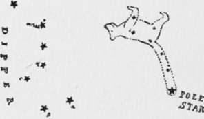

Hiking In The Snow. Part 2
Description
This section is from the book "The Book Of Woodcraft", by Ernest Thompson Seton. Also available from Amazon: The Book of Woodcraft.
Hiking In The Snow. Part 2
Poor little Prince! It made him lose his nightly couch in Abraham's bosom and condemned him to be tubbed and scrubbed every day, and to sleep outdoors for a week. But he had his revenge on all of us; for he barked all night, and every night, under our windows. He couldn't sleep; why should we? And we didn't.
Of course, this instance is given rather as a dreadful example of error than as a model for others.
We got back from our hike that time with a lot of interesting wild animal experience, and yet you will note we did not see any wild animal all the time.
Old Weather Wisdom
When the dew is on the grass, Rain will never come to pass.
When the grass is dry at night, Look for rain before the light.
When grass is dry at morning light, Look for rain before the night.
Three days' rain will empty any sky.
A deep, clear sky of fleckless blue Breeds storms within a day or two.
When the wind is in the east,
It's good for neither man nor beast.
When the wind is in the north,
The old folk should not venture forth,
When the wind is in the south,
It blows the bait in the fishes' mouth.
When the wind is in the west,
It is of all the winds the best.
An opening and a shetting Is a sure sign of a wetting.
(Another version)
Open and shet, Sure sign of wet.
(Still another)
It's lighting up to see to rain.
Evening red and morning gray Sends the traveler on his way. Evening gray and morning red Sends the traveler home to bed.
Red sky at morning, the shepherd takes warning; Red sky at night is the shepherd's delight.
If the sun goes down cloudy Friday, sure of a clear Sunday.
If a rooster crows standing on a fence or high place, it will clear. If on the ground, it doesn't count.
Between eleven and two.
You can tell what the weather is going to do.
Rain before seven, clear before eleven.
Fog in the morning, bright sunny day.
If it rains, and the sun is shining at the same time, the devil is whipping his wife and it will surely rain to-morrow.
If it clears off during the night, it will rain shortly again.
Sun drawing water, sure sign of rain.
A circle round the moon means "storm." As many stars as are in circle, so many days before it will rain.
Sudden heat brings thunder.
A storm that comes against the wind is always a thunderstorm.
The oak and the ash draw lightning. Under the birch the cedar, and balsam you are safe. East wind brings rain.
West wind brings clear, bright, cool weather. North wind brings cold.
South wind brings heat. (On Atlantic coast).
The rain-crow or cuckoo (both species) is supposed by all hunters to foretell rain, when its "Kow, kow, kow" is long and hard.
So, also, the tree-frog cries before rain. Swallows flying low is a sign of rain; high, of clearing weather.
The rain follows the wind, and the heavy blast is just before the shower.
Outdoor Proverbs
What weighs an ounce in the morning, weighs a pound at night.
A pint is a pound the whole world round.
Allah reckons not against a man's allotted time the days he spends in the chase.
If there's only one, it isn't a track, it's an accident.
Better safe than sorry.
No smoke without fire.
The bluejay doesn't scream without reason.
The worm don't see nuffin pretty 'bout de robin's song.- (Darkey).
Ducks flying over head in the woods are generally pointed for water.
If the turtles on a log are dry, they have been there half an hour or more, which means no one has been near to alarm them.
Cobwebs across a hole mean "nothing inside".
Whenever you are trying to be smart, you are going wrong. Smart Aleck always comes to grief.
You are safe and winning, when you are trying to be kind.
The Stars
A settlement worker once said to me: "It's all very-well talking of the pleasures of nature study, but what use is it to my little Italians and Polish Jews in the slums of New York? They get no chance to see the face of nature".
"If they do not," I replied, "it is their own fault. They watch the pavements too much for coppers; they are forever looking down. To-night you ask them to look up. If the sky is clear, they will have a noble chance".
Yes! the stars are the principle study for outdoors at night and above all in winter time; for not only are many of the woodcraft pursuits impossible now, but the nights are long, the sky is clear, and some of the most famous star-groups are visible to us only in winter.
So far as there is a central point in our heavens, that point is the Pole Star - Polaris. Around this all the stars in the sky seem to turn once in twenty-four hours. It is easily discovered by the help of the Pointers, or Dipper, known to every country boy in America.
Most of the star-groups are known by the names of human figures or animals. The modern astronomers laugh at and leave out these figures in the sky; but we shall find it a great help to memory and interest if we revive and use them; but it is well to say now that it is not because the form of the group has such resemblance, but because there is some traditional association of the two. For example:
cut 1.
The classical legend has it that the nymph Callisto, having violated her vow, was changed by Diana into a bear, which, after death was immortalized in the sky by Zeus. Another suggestion is that the earliest astronomers, the Chaldeans, called these stars "the shining ones," and their word happened to be very like the Greek Arktos (a bear). Another explanation (I do not know who is authority for either) is that vessels in olden days were named for animals, etc. They bore at the prow the carved emgy of their namesake, and if the "Great Bear," for example, made several very happy voyages by setting out when a certain constellation was in the ascendant, that constellation might become known as the Great Bear's Constellation.
Continue to:
Tags
bookdome.com, books, online, free, old, antique, new, read, browse, download